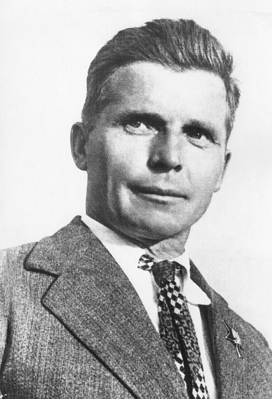

Семья

Был женат два раза и имел 4 детей.
Первая жена — Раиса Жалковская (1897 – 1972).
Дети:
Дочь Ирина (1920 – 2007). Жена академика Ореховича;
Сын Владимир (1927 – 2010). Стал летчиком, после испытывал прототипы самолетов. Заслуженный Герой СССР.
Вторая жена — Анастасия Васильевна Советова (1915—2008). Работала в КБ инженером – проектировщиком.
Дети:
Сергей Сергеевич Ильюшин (1947 – 1990). Авиаинженер;
В личной жизни советского авиаконструктора было два официальных брака. С первой женой Раисой Михайловной Жалковской Ильюшин воспитывал дочь Ирину и сына Владимира — летчика-испытателя, награжденного званием Героя СССР.
После Великой Отечественной войны Сергей Владимирович разошелся с супругой из-за Анастасии Васильевны Советовой — сотрудницы его конструкторского бюро. Бурный продолжительный роман осуждали члены трудового коллектива. Однако разработчик самолетов возлюбленную в обиду не дал.
Раиса, оставшаяся с детьми, получила от мужа алименты и большую квартиру, однако потомки до конца жизни не простили измены отца. Ильюшин, расстроенный разрывом с первенцами, переключился на общение с рожденными в новом браке сыновьями. Он добился того, что старший Сергей пошел по стопам родителя и получил диплом вуза со специальностью «инженер».